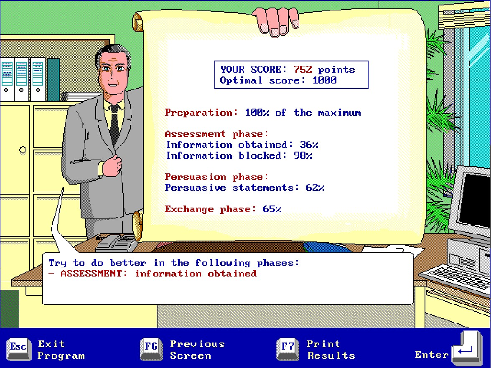

Ако играете играта самостоятелно за наваксване на пропуснати точки от клас:
1) Стартирате играта и се регистрирате с име на играч - вашето име.
2) Изигравате играта и сваляте скрийншот, от който да се вижда името на играча (т.е. вашето име) и резултатът ви към края на играта. Записвате файла със скрийншота във вид на изображение (jpg, gif, bmp, пр.) и наименовате файла във вид факултетен_номер_име_фамилия_игра на латиница. (Например: 15164032_ivan_ivanov_nego.jpg).
Примерен скрийншот:

3) Изпратете скрийншота и отчетете играта си на следния линк: https://forms.gle/jh39VWFwsjfXE8BM9 (ако пратите по някакъв друг начин, НЯМА ДА ВИ БЪДЕ ОТЧЕТЕН РЕЗУЛТАТ).